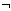

Logical Operators |
[Ctrl] [Shift] 7
x  y
y
Returns 1 if both x and y are non-zero (true). Returns 0 otherwise.
[Ctrl] [Shift] 6
x y
Returns 1 if either x or y are non-zero (true). Returns 0 otherwise.
[Ctrl] [Shift] 5
x  y
y
Returns 1 if either x or y, but not both, are non-zero (true). Returns 0 otherwise.
[Ctrl] [Shift] 1
x
Returns 1 if x is zero (false). Returns 0 otherwise.
x and y are real or complex scalars.
0  (2/0) = 0 (2/0
is never evaluated)
(2/0) = 0 (2/0
is never evaluated)
(2/0)  0 = 0 gives an error (2/0
causes singularity error)
0 = 0 gives an error (2/0
causes singularity error)